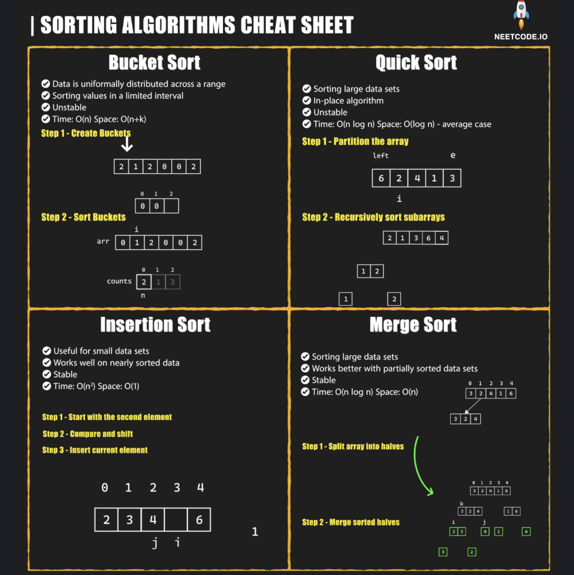

Sort
Last updated: Sep 2, 2025Table of Contents
- Overview
- Key Properties
- Algorithm Selection Guide
- References
- Problem Categories
- Pattern 1: Custom Comparator Sorting
- Pattern 2: Topological Sorting
- Pattern 3: Interval Sorting
- Pattern 4: K-th Element
- Pattern 5: Bucket/Counting Sort
- Pattern 6: Merge Sort Applications
- Templates & Algorithms
- Algorithm Comparison Table
- Template 1: Quick Sort
- Template 2: Merge Sort
- Template 3: Custom Comparator Sorting
- Template 4: Quick Select (K-th Element)
- Template 5: Counting Sort
- Template 6: Topological Sort
- Problems by Pattern
- Pattern-Based Problem Tables
- Pattern Selection Strategy
- Summary & Quick Reference
- Complexity Quick Reference
- Template Quick Reference
- Common Patterns & Tricks
- Problem-Solving Steps
- Common Mistakes & Tips
- Interview Tips
- Advanced Techniques
- Related Topics
- LC Example
- 2-1) Pancake Sorting
- 2-1) Reorder Data in Log Files
- 2-2) Meeting Rooms
- 2-3) Custom Sort String
- 2-4) Find K Closest Elements
- 2-5) Largest Number
- 2-6) Permutation in String
- 2-7) Car Fleet
- 2-7) TopK Frequent Words
Sorting Algorithms & Techniques

Overview
Sorting is the process of arranging elements in a specific order (ascending or descending). It’s fundamental to many algorithms and data structures, enabling efficient searching, data analysis, and problem-solving.
Key Properties
- Stability: Maintains relative order of equal elements
- In-place: Uses O(1) extra space
- Adaptive: Performs better on partially sorted data
- When to Use: Data ordering, preprocessing for binary search, finding medians/percentiles
Algorithm Selection Guide
- Small datasets (n < 50): Insertion Sort
- General purpose: Quick Sort, Merge Sort
- Guaranteed O(n log n): Heap Sort, Merge Sort
- Nearly sorted: Insertion Sort, Bubble Sort
- Limited range: Counting Sort, Radix Sort
References
| Sorting Algorithm | Time Complexity (Best Case) | Time Complexity (Average Case) | Time Complexity (Worst Case) | Space Complexity |
|---|---|---|---|---|
| Bubble Sort | O(n) | O(n²) | O(n²) | O(1) |
| Insertion Sort | O(n) | O(n²) | O(n²) | O(1) |
| Selection Sort | O(n²) | O(n²) | O(n²) | O(1) |
| Merge Sort | O(n log n) | O(n log n) | O(n log n) | O(n) |
| Quick Sort | O(n log n) | O(n log n) | O(n²) | O(log n) |
| Heap Sort | O(n log n) | O(n log n) | O(n log n) | O(1) |
| Counting Sort | O(n + k) | O(n + k) | O(n + k) | O(k) |
| Radix Sort | O(nk) | O(nk) | O(nk) | O(n + k) |
| Bucket Sort | O(n + k) | O(n + k) | O(n²) | O(n) |
Problem Categories
Pattern 1: Custom Comparator Sorting
- Description: Sort with custom rules or multiple criteria
- Examples: LC 179, 791, 937, 1029, 1366
- Pattern: Define comparison function for complex ordering
Pattern 2: Topological Sorting
- Description: Order elements based on dependencies
- Examples: LC 207, 210, 269, 310, 1136
- Pattern: DFS/BFS with in-degree tracking
Pattern 3: Interval Sorting
- Description: Sort intervals for merging/processing
- Examples: LC 56, 57, 252, 253, 435
- Pattern: Sort by start, then process
Pattern 4: K-th Element
- Description: Find k-th smallest/largest efficiently
- Examples: LC 215, 347, 378, 658, 973
- Pattern: Quick Select or Heap
Pattern 5: Bucket/Counting Sort
- Description: Sort with limited value range
- Examples: LC 164, 274, 451, 1122, 1636
- Pattern: Use value as index
Pattern 6: Merge Sort Applications
- Description: Divide-and-conquer with sorting
- Examples: LC 23, 148, 315, 327, 493
- Pattern: Merge sorted sequences
Templates & Algorithms
Algorithm Comparison Table
| Algorithm | Best | Average | Worst | Space | Stable | When to Use |
|---|---|---|---|---|---|---|
| Quick Sort | O(n log n) | O(n log n) | O(n²) | O(log n) | No | General purpose |
| Merge Sort | O(n log n) | O(n log n) | O(n log n) | O(n) | Yes | Stable, guaranteed O(n log n) |
| Heap Sort | O(n log n) | O(n log n) | O(n log n) | O(1) | No | In-place, guaranteed O(n log n) |
| Insertion Sort | O(n) | O(n²) | O(n²) | O(1) | Yes | Small or nearly sorted |
| Counting Sort | O(n+k) | O(n+k) | O(n+k) | O(k) | Yes | Limited range integers |
| Radix Sort | O(nk) | O(nk) | O(nk) | O(n+k) | Yes | Fixed-width integers |
Template 1: Quick Sort
# Python - Classic Quick Sort
def quickSort(arr, low=0, high=None):
if high is None:
high = len(arr) - 1
if low < high:
# Partition and get pivot index
pi = partition(arr, low, high)
# Recursively sort left and right
quickSort(arr, low, pi - 1)
quickSort(arr, pi + 1, high)
return arr
def partition(arr, low, high):
# Choose rightmost as pivot
pivot = arr[high]
i = low - 1 # Smaller element index
for j in range(low, high):
if arr[j] <= pivot:
i += 1
arr[i], arr[j] = arr[j], arr[i]
arr[i + 1], arr[high] = arr[high], arr[i + 1]
return i + 1
# 3-way Quick Sort for duplicates
def quickSort3Way(arr, low=0, high=None):
if high is None:
high = len(arr) - 1
if low < high:
lt, gt = partition3Way(arr, low, high)
quickSort3Way(arr, low, lt - 1)
quickSort3Way(arr, gt + 1, high)
return arr
def partition3Way(arr, low, high):
pivot = arr[low]
i = low
lt = low
gt = high
while i <= gt:
if arr[i] < pivot:
arr[lt], arr[i] = arr[i], arr[lt]
lt += 1
i += 1
elif arr[i] > pivot:
arr[i], arr[gt] = arr[gt], arr[i]
gt -= 1
else:
i += 1
return lt, gt
// Java - Quick Sort
public void quickSort(int[] arr, int low, int high) {
if (low < high) {
int pi = partition(arr, low, high);
quickSort(arr, low, pi - 1);
quickSort(arr, pi + 1, high);
}
}
private int partition(int[] arr, int low, int high) {
int pivot = arr[high];
int i = low - 1;
for (int j = low; j < high; j++) {
if (arr[j] <= pivot) {
i++;
swap(arr, i, j);
}
}
swap(arr, i + 1, high);
return i + 1;
}
private void swap(int[] arr, int i, int j) {
int temp = arr[i];
arr[i] = arr[j];
arr[j] = temp;
}
Template 2: Merge Sort
# Python - Merge Sort
def mergeSort(arr):
if len(arr) <= 1:
return arr
mid = len(arr) // 2
left = mergeSort(arr[:mid])
right = mergeSort(arr[mid:])
return merge(left, right)
def merge(left, right):
result = []
i = j = 0
while i < len(left) and j < len(right):
if left[i] <= right[j]:
result.append(left[i])
i += 1
else:
result.append(right[j])
j += 1
result.extend(left[i:])
result.extend(right[j:])
return result
# In-place merge sort
def mergeSortInPlace(arr, left=0, right=None):
if right is None:
right = len(arr) - 1
if left < right:
mid = (left + right) // 2
mergeSortInPlace(arr, left, mid)
mergeSortInPlace(arr, mid + 1, right)
mergeInPlace(arr, left, mid, right)
return arr
def mergeInPlace(arr, left, mid, right):
left_arr = arr[left:mid + 1]
right_arr = arr[mid + 1:right + 1]
i = j = 0
k = left
while i < len(left_arr) and j < len(right_arr):
if left_arr[i] <= right_arr[j]:
arr[k] = left_arr[i]
i += 1
else:
arr[k] = right_arr[j]
j += 1
k += 1
while i < len(left_arr):
arr[k] = left_arr[i]
i += 1
k += 1
while j < len(right_arr):
arr[k] = right_arr[j]
j += 1
k += 1
// Java - Merge Sort
public void mergeSort(int[] arr, int left, int right) {
if (left < right) {
int mid = left + (right - left) / 2;
mergeSort(arr, left, mid);
mergeSort(arr, mid + 1, right);
merge(arr, left, mid, right);
}
}
private void merge(int[] arr, int left, int mid, int right) {
int n1 = mid - left + 1;
int n2 = right - mid;
int[] leftArr = new int[n1];
int[] rightArr = new int[n2];
for (int i = 0; i < n1; i++) {
leftArr[i] = arr[left + i];
}
for (int j = 0; j < n2; j++) {
rightArr[j] = arr[mid + 1 + j];
}
int i = 0, j = 0, k = left;
while (i < n1 && j < n2) {
if (leftArr[i] <= rightArr[j]) {
arr[k++] = leftArr[i++];
} else {
arr[k++] = rightArr[j++];
}
}
while (i < n1) {
arr[k++] = leftArr[i++];
}
while (j < n2) {
arr[k++] = rightArr[j++];
}
}
Template 3: Custom Comparator Sorting
# Python - Custom sorting
class Solution:
def customSort(self, items):
# Single key
items.sort(key=lambda x: x[0])
# Multiple keys
items.sort(key=lambda x: (x[0], -x[1], x[2]))
# Complex comparison
def compare(item):
# Return tuple of sort keys
if condition:
return (0, item.value, item.name)
else:
return (1, -item.priority, item.id)
items.sort(key=compare)
# Using functools for traditional comparison
from functools import cmp_to_key
def compare_func(a, b):
if a < b:
return -1
elif a > b:
return 1
else:
return 0
items.sort(key=cmp_to_key(compare_func))
return items
# Custom class for sorting
class CustomComparable:
def __init__(self, value, priority):
self.value = value
self.priority = priority
def __lt__(self, other):
# Define less than for sorting
if self.priority != other.priority:
return self.priority > other.priority
return self.value < other.value
// Java - Custom comparator
public void customSort(List<Item> items) {
// Lambda comparator
items.sort((a, b) -> a.value - b.value);
// Multiple criteria
items.sort((a, b) -> {
if (a.priority != b.priority) {
return b.priority - a.priority; // Descending
}
return a.name.compareTo(b.name); // Ascending
});
// Using Comparator methods
items.sort(Comparator
.comparingInt(Item::getPriority).reversed()
.thenComparing(Item::getName));
// Custom Comparator class
items.sort(new Comparator<Item>() {
@Override
public int compare(Item a, Item b) {
// Custom logic
return customCompare(a, b);
}
});
}
// Comparable interface
class Item implements Comparable<Item> {
int value;
String name;
@Override
public int compareTo(Item other) {
if (this.value != other.value) {
return this.value - other.value;
}
return this.name.compareTo(other.name);
}
}
Template 4: Quick Select (K-th Element)
# Python - Quick Select for k-th smallest
def quickSelect(arr, k):
# Find k-th smallest (0-indexed)
return quickSelectHelper(arr, 0, len(arr) - 1, k - 1)
def quickSelectHelper(arr, left, right, k):
if left == right:
return arr[left]
# Random pivot for better average case
import random
pivot_idx = random.randint(left, right)
pivot_idx = partition(arr, left, right, pivot_idx)
if k == pivot_idx:
return arr[k]
elif k < pivot_idx:
return quickSelectHelper(arr, left, pivot_idx - 1, k)
else:
return quickSelectHelper(arr, pivot_idx + 1, right, k)
def partition(arr, left, right, pivot_idx):
pivot = arr[pivot_idx]
# Move pivot to end
arr[pivot_idx], arr[right] = arr[right], arr[pivot_idx]
store_idx = left
for i in range(left, right):
if arr[i] < pivot:
arr[store_idx], arr[i] = arr[i], arr[store_idx]
store_idx += 1
# Move pivot to final position
arr[store_idx], arr[right] = arr[right], arr[store_idx]
return store_idx
Template 5: Counting Sort
# Python - Counting Sort
def countingSort(arr, max_val=None):
if not arr:
return arr
if max_val is None:
max_val = max(arr)
min_val = min(arr)
# Create counting array
range_size = max_val - min_val + 1
count = [0] * range_size
# Count occurrences
for num in arr:
count[num - min_val] += 1
# Reconstruct sorted array
idx = 0
for i in range(range_size):
while count[i] > 0:
arr[idx] = i + min_val
idx += 1
count[i] -= 1
return arr
# Stable counting sort
def stableCountingSort(arr):
if not arr:
return arr
max_val = max(arr)
min_val = min(arr)
range_size = max_val - min_val + 1
count = [0] * range_size
output = [0] * len(arr)
# Count occurrences
for num in arr:
count[num - min_val] += 1
# Cumulative count
for i in range(1, range_size):
count[i] += count[i - 1]
# Build output array (stable)
for i in range(len(arr) - 1, -1, -1):
output[count[arr[i] - min_val] - 1] = arr[i]
count[arr[i] - min_val] -= 1
return output
Template 6: Topological Sort
# Python - Topological Sort (Kahn's Algorithm)
def topologicalSort(numNodes, edges):
# Build graph and in-degree
graph = defaultdict(list)
in_degree = [0] * numNodes
for u, v in edges:
graph[u].append(v)
in_degree[v] += 1
# Queue for nodes with no dependencies
queue = deque([i for i in range(numNodes) if in_degree[i] == 0])
result = []
while queue:
node = queue.popleft()
result.append(node)
for neighbor in graph[node]:
in_degree[neighbor] -= 1
if in_degree[neighbor] == 0:
queue.append(neighbor)
# Check for cycle
if len(result) != numNodes:
return [] # Cycle detected
return result
# DFS-based Topological Sort
def topologicalSortDFS(numNodes, edges):
graph = defaultdict(list)
for u, v in edges:
graph[u].append(v)
visited = set()
stack = []
def dfs(node):
visited.add(node)
for neighbor in graph[node]:
if neighbor not in visited:
dfs(neighbor)
stack.append(node)
for i in range(numNodes):
if i not in visited:
dfs(i)
return stack[::-1]
Problems by Pattern
Pattern-Based Problem Tables
Custom Comparator Problems
| Problem | LC # | Key Technique | Difficulty |
|---|---|---|---|
| Largest Number | 179 | String comparison | Medium |
| Custom Sort String | 791 | Character order | Medium |
| Reorder Data in Log Files | 937 | Multi-key sort | Easy |
| Two City Scheduling | 1029 | Cost difference | Medium |
| Rank Teams by Votes | 1366 | Vote counting | Medium |
| Sort Array by Parity | 905 | Even/odd separation | Easy |
| Relative Sort Array | 1122 | Custom order | Easy |
Topological Sort Problems
| Problem | LC # | Key Technique | Difficulty |
|---|---|---|---|
| Course Schedule | 207 | Cycle detection | Medium |
| Course Schedule II | 210 | Ordering with dependencies | Medium |
| Alien Dictionary | 269 | Character ordering | Hard |
| Minimum Height Trees | 310 | Tree centroid | Medium |
| Parallel Courses | 1136 | Level-based processing | Medium |
| Sequence Reconstruction | 444 | Unique ordering | Medium |
Interval Sorting Problems
| Problem | LC # | Key Technique | Difficulty |
|---|---|---|---|
| Merge Intervals | 56 | Sort and merge | Medium |
| Insert Interval | 57 | Binary search insertion | Medium |
| Meeting Rooms | 252 | Overlap check | Easy |
| Meeting Rooms II | 253 | Sweep line | Medium |
| Non-overlapping Intervals | 435 | Greedy removal | Medium |
| Minimum Number of Arrows | 452 | Interval intersection | Medium |
K-th Element Problems
| Problem | LC # | Key Technique | Difficulty |
|---|---|---|---|
| Kth Largest Element | 215 | Quick select | Medium |
| Top K Frequent Elements | 347 | Bucket sort | Medium |
| Kth Smallest in Matrix | 378 | Binary search | Medium |
| Find K Closest Elements | 658 | Two pointers | Medium |
| K Closest Points to Origin | 973 | Quick select | Medium |
| Kth Largest in Stream | 703 | Min heap | Easy |
Counting/Bucket Sort Problems
| Problem | LC # | Key Technique | Difficulty |
|---|---|---|---|
| Maximum Gap | 164 | Bucket sort | Hard |
| H-Index | 274 | Counting sort | Medium |
| Sort Characters By Frequency | 451 | Frequency buckets | Medium |
| Relative Sort Array | 1122 | Counting sort | Easy |
| Sort Array by Frequency | 1636 | Custom comparator | Easy |
Merge Sort Application Problems
| Problem | LC # | Key Technique | Difficulty |
|---|---|---|---|
| Merge k Sorted Lists | 23 | K-way merge | Hard |
| Sort List | 148 | Linked list merge sort | Medium |
| Count of Smaller Numbers | 315 | Merge sort with count | Hard |
| Count of Range Sum | 327 | Merge sort | Hard |
| Reverse Pairs | 493 | Modified merge sort | Hard |
Pattern Selection Strategy
Problem Analysis Flowchart:
1. Need custom ordering rules?
├── YES → Custom Comparator
│ ├── Multiple criteria → Tuple comparison
│ └── Complex logic → Comparison function
└── NO → Continue to 2
2. Dealing with dependencies?
├── YES → Topological Sort
│ ├── Detect cycle → Kahn's algorithm
│ └── Find ordering → DFS approach
└── NO → Continue to 3
3. Working with intervals?
├── YES → Sort by start/end
│ ├── Merge overlapping → Greedy merge
│ └── Find conflicts → Sweep line
└── NO → Continue to 4
4. Finding k-th element?
├── YES → Quick Select or Heap
│ ├── One-time query → Quick select O(n)
│ └── Multiple queries → Heap O(n log k)
└── NO → Continue to 5
5. Limited value range?
├── YES → Counting/Bucket Sort
│ ├── Integers → Counting sort
│ └── With precision → Bucket sort
└── NO → Use standard sorting
Summary & Quick Reference
Complexity Quick Reference
| Algorithm | Best Case | Average | Worst Case | Space | Stable |
|---|---|---|---|---|---|
| Quick Sort | O(n log n) | O(n log n) | O(n²) | O(log n) | No |
| Merge Sort | O(n log n) | O(n log n) | O(n log n) | O(n) | Yes |
| Heap Sort | O(n log n) | O(n log n) | O(n log n) | O(1) | No |
| Tim Sort | O(n) | O(n log n) | O(n log n) | O(n) | Yes |
| Counting Sort | O(n+k) | O(n+k) | O(n+k) | O(k) | Yes |
| Radix Sort | O(nk) | O(nk) | O(nk) | O(n+k) | Yes |
Template Quick Reference
| Template | Pattern | Key Code |
|---|---|---|
| Quick Sort | Partition | pivot; partition; recurse |
| Merge Sort | Divide & merge | mid; merge(left, right) |
| Custom Sort | Comparator | key=lambda x: criteria |
| Quick Select | K-th element | partition until k |
| Counting Sort | Value as index | count[val]++ |
| Topological | Dependencies | in_degree; queue |
Common Patterns & Tricks
Python Sorting Tricks
# Sort with multiple keys
items.sort(key=lambda x: (x[0], -x[1], x[2]))
# Sort by custom class
items.sort(key=lambda x: x.priority, reverse=True)
# Stable sort in multiple passes
items.sort(key=lambda x: x.secondary) # First
items.sort(key=lambda x: x.primary) # Then primary
# In-place vs new list
arr.sort() # In-place
sorted_arr = sorted(arr) # New list
Java Sorting Tricks
// Lambda comparator
Arrays.sort(arr, (a, b) -> a - b);
// Method reference
Arrays.sort(arr, Integer::compare);
// Comparator chaining
Arrays.sort(items, Comparator
.comparing(Item::getPriority)
.thenComparing(Item::getName));
// Reverse order
Arrays.sort(arr, Collections.reverseOrder());
Problem-Solving Steps
-
Identify Sorting Need
- Is sorting necessary?
- Can we use partial sorting?
- Do we need stability?
-
Choose Algorithm
- Dataset size
- Value range
- Memory constraints
- Stability requirement
-
Define Comparison
- Single or multiple keys?
- Ascending or descending?
- Special cases handling
-
Optimize if Needed
- Quick select for k-th element
- Counting sort for limited range
- Bucket sort for uniform distribution
Common Mistakes & Tips
🚫 Common Mistakes:
- Modifying array during custom comparison
- Integer overflow in comparator (a - b)
- Not handling equal elements in comparator
- Using unstable sort when stability needed
- O(n²) algorithms for large datasets
✅ Best Practices:
- Use built-in sort for most cases
- Prefer Integer.compare() over subtraction
- Test with duplicates and edge cases
- Consider partial sorting for k elements
- Use stable sort for equal element ordering
Interview Tips
-
Algorithm Choice
- Start with built-in sort
- Optimize only if needed
- Explain time/space trade-offs
-
Custom Comparator
- Handle all comparison cases
- Avoid integer overflow
- Maintain transitivity
-
Common Questions
- “Why Quick Sort over Merge Sort?”
- “How to make Quick Sort stable?”
- “When to use Counting Sort?”
-
Follow-up Optimizations
- Sort only k elements
- External sorting for large data
- Parallel sorting
Advanced Techniques
Hybrid Sorting
- Tim Sort: Merge + Insertion
- Intro Sort: Quick + Heap + Insertion
- Used in Python and Java standard libraries
External Sorting
- K-way merge for disk-based data
- Used in databases and big data
Parallel Sorting
- Divide data among processors
- Parallel merge or sample sort
Related Topics
- Heap: Priority queue, k-th element
- Binary Search: On sorted arrays
- Divide & Conquer: Merge sort pattern
- Greedy: Interval scheduling
- Graph: Topological ordering
LC Example
2-1) Pancake Sorting
# python
# LC 969 Pancake Sorting
# V0
# IDEA : pankcake sort + while loop
# IDEA : 3 STEPS
# -> step 1) Find the maximum number in arr
# -> step 2) Reverse from 0 to max_idx
# -> step 3) Reverse whole list
# https://github.com/yennanliu/CS_basics/blob/master/algorithm/python/pancake_sort.py
class Solution(object):
def pancakeSort(self, arr):
"""Sort Array with Pancake Sort.
:param arr: Collection containing comparable items
:return: Collection ordered in ascending order of items
Examples:
>>> pancake_sort([0, 5, 3, 2, 2])
[0, 2, 2, 3, 5]
>>> pancake_sort([])
[]
>>> pancake_sort([-2, -5, -45])
[-45, -5, -2]
"""
cur = len(arr)
res = []
while cur > 1:
# step 1) Find the maximum number in arr
max_idx = arr.index(max(arr[0:cur]))
res = res + [max_idx+1, cur] # idx is 1 based
# step 2) Reverse from 0 to max_idx
#arr = arr[max_idx::-1] + arr[max_idx + 1 : len(arr)] # this is OK as well
arr = arr[:max_idx][::-1] + arr[max_idx + 1 : len(arr)]
# step 3) Reverse whole list
#arr = arr[cur - 1 :: -1] + arr[cur : len(arr)] # this is OK as well
#arr = arr[:cur - 1][::-1] + arr[cur : len(arr)] # this is OK as well
tmp = arr[::-1]
arr = tmp
cur -= 1
print ("arr = " + str(arr))
return res
# V1
# https://leetcode.com/problems/pancake-sorting/discuss/817978/Python-O(n2)-by-simulation-w-Comment
# https://leetcode.com/problems/pancake-sorting/discuss/330990/Python
class Solution:
def pancakeSort(self, A):
res = []
for x in range(len(A), 1, -1):
# Carry out pancake-sort from largest number n to smallest number 1
# find the index of x
i = A.index(x)
# flip first i+1 elements to put x on A[0]
# flip first x elements to put x on A[x-1]
# now, x is on its corresponding position A[x-1] on ascending order
#
"""
# array extend
In [10]: x = [1,2,3]
In [11]: x.extend([4])
In [12]: x
Out[12]: [1, 2, 3, 4]
In [13]: x = [1,2,3]
In [14]: x = x + [4]
In [15]: x
Out[15]: [1, 2, 3, 4]
"""
#res.extend([i + 1, x])
res = res + [i + 1, x]
# update A
"""
https://stackoverflow.com/questions/509211/understanding-slice-notation
a[::-1] # all items in the array, reversed
a[1::-1] # the first two items, reversed
a[:-3:-1] # the last two items, reversed
a[-3::-1] # everything except the last two items, reversed
-> A[:i:-1] : last i items, reversed
"""
A = A[:i:-1] + A[:i]
#print ("res = " + str(res))
return res
# V1
# IDEA : RECURSIVE
# https://leetcode.com/problems/pancake-sorting/discuss/553116/My-python-solution
# https://leetcode.com/problems/pancake-sorting/discuss/274921/PythonDetailed-Explanation-for-This-Problem
class Solution:
def pancakeSort(self, A):
pointer = len(A)
result = []
while pointer > 1:
idx = A.index(pointer)
result.append(idx + 1)
A = A[idx::-1] + A[idx + 1:]
result.append(pointer)
A = A[pointer - 1::-1] + A[pointer:]
pointer -= 1
return result
// java
// aAlgorithm book (labu) p. 347
// record reverse op array
LinkedList<Integer> res = new LinkedList<>{};
List<Integer> pancakeSort(int[] cakes){
sort(cakes, cakes.length);
return res;
}
// order first N pancakes
void sort(int[] cakes, int n){
// base case
if (n == 1) return;
// find max index
int maxCake = 0;
int maxCakeIndex = 0;
for (int i = 0; i < n; i ++){
if (cakes[i] > maxCake){
maxCakeIndex = i;
maxCake = cakes[i];
}
}
// after 1st flip, put max pancake to the 1st layer
reverse(cakes, 0, maxCakeIndex);
// record this flip
res.add(maxCakeIndex+1);
// 2nd flip, make max pancake to the bottom (last layer)
reverse(cakes, 0, n-1);
// record this flop
res.add(n);
// recursive call : flip the remaining pancakes
sort(cakes, n-1);
}
/** flip arr[i..j] elements */
void reverse(int[] arr, int i, int j){
while (i < j){
int tmp = arr[i];
arr[i] = arr[j];
arr[j] = tmp;
i++;
j--;
}
}
2-1) Reorder Data in Log Files
# LC 937. Reorder Data in Log Files
# V0
# IDEA : SORT BY KEY
class Solution:
def reorderLogFiles(self, logs):
def f(log):
id_, rest = log.split(" ", 1)
"""
NOTE !!!
2 cases:
1) case 1: rest[0].isalpha() => sort by rest, id_
2) case 2: rest[0] is digit => DO NOTHING (keep original order)
syntax:
if condition:
return key1, key2, key3 ....
"""
if rest[0].isalpha():
return 0, rest, id_
else:
return 1, None, None
#return 100, None, None # since we need to put Digit-logs behind of Letter-logs, so first key should be ANY DIGIT BIGGER THAN 0
logs.sort(key = lambda x : f(x))
return logs
# V1
# IDEA : SORT BY keys
# https://leetcode.com/problems/reorder-data-in-log-files/solution/
class Solution:
def reorderLogFiles(self, logs):
def get_key(log):
_id, rest = log.split(" ", maxsplit=1)
"""
NOTE !!!
2 cases:
1) case 1: rest[0].isalpha() => sort by rest, id_
2) case 2: rest[0] is digit => DO NOTHING (keep original order)
"""
return (0, rest, _id) if rest[0].isalpha() else (1, )
return sorted(logs, key=get_key)
2-2) Meeting Rooms
# LC 252. Meeting Rooms
# V0
class Solution:
def canAttendMeetings(self, intervals):
"""
NOTE this
"""
intervals.sort(key=lambda x: x[0])
for i in range(1, len(intervals)):
"""
NOTE this :
-> we compare ntervals[i][0] and ntervals[i-1][1]
"""
if intervals[i][0] < intervals[i-1][1]:
return False
return True
2-3) Custom Sort String
# LC 791. Custom Sort String
# V0
# IDEA : COUNTER
from collections import Counter
class Solution(object):
def customSortString(self, order, s):
s_map = Counter(s)
res = ""
for o in order:
if o in s_map:
res += (o * s_map[o])
del s_map[o]
for s in s_map:
res += s * s_map[s]
return res
2-4) Find K Closest Elements
# LC 658. Find K Closest Elements
# NOTE : there is also stack, binary search.. approaches
# V0'
# IDEA : SORTING
class Solution:
def findClosestElements(self, arr, k, x):
# Sort using custom comparator
sorted_arr = sorted(arr, key = lambda num: abs(x - num))
# Only take k elements
result = []
for i in range(k):
result.append(sorted_arr[i])
# Sort again to have output in ascending order
return sorted(result)
2-5) Largest Number
# LC 179. Largest Number
# V0
# IDEA : Sorting via Custom Comparator
class compare(str):
# __lt__ defines ">" operator in python
def __lt__(x, y):
return x+y > y+x
class Solution:
def largestNumber(self, nums):
largest = sorted([str(v) for v in nums], key=compare)
largest = ''.join(largest)
return '0' if largest[0] == '0' else largest
2-6) Permutation in String
# LC 567
# V0
# IDEA : collections + sliding window
from collections import Counter
class Solution(object):
def checkInclusion(self, s1, s2):
if len(s1) > len(s2):
return False
l = 0
tmp = ""
_s1 = Counter(s1)
_s2 = Counter()
for i, item in enumerate(s2):
### NOTE : we need to append new element first, then compare
_s2[item] += 1
tmp = s2[l:i+1]
if _s2 == _s1 and len(tmp) > 0:
return True
if len(tmp) >= len(s1):
_s2[tmp[0]] -= 1
if _s2[tmp[0]] == 0:
del _s2[tmp[0]]
l += 1
return False
// java
// LC 567
// V2
// IDEA : SORTING
// https://leetcode.com/problems/permutation-in-string/editorial/
public boolean checkInclusion_3(String s1, String s2) {
s1 = sort(s1);
for (int i = 0; i <= s2.length() - s1.length(); i++) {
if (s1.equals(sort(s2.substring(i, i + s1.length()))))
return true;
}
return false;
}
public String sort(String s) {
char[] t = s.toCharArray();
Arrays.sort(t);
return new String(t);
}
2-7) Car Fleet
// java
// LC 853. Car Fleet
// V0
// IDEA: pair position and speed, sorting (gpt)
/**
* IDEA :
*
* The approach involves sorting the cars by their starting positions
* (from farthest to nearest to the target)
* and computing their time to reach the target.
* We then iterate through these times to count the number of distinct fleets.
*
*
*
* Steps in the Code:
* 1. Pair Cars with Their Speeds:
* • Combine position and speed into a 2D array cars for easier sorting and access.
* 2. Sort Cars by Position Descending:
* • Use Arrays.sort with a custom comparator to sort cars from farthest to nearest relative to the target.
* 3. Calculate Arrival Times:
* • Compute the time each car takes to reach the target using the formula:
*
* time = (target - position) / speed
*
* 4. Count Fleets:
* • Iterate through the times array:
* • If the current car’s arrival time is greater than the lastTime (time of the last fleet), it forms a new fleet.
* • Update lastTime to the current car’s time.
* 5. Return Fleet Count:
* • The number of distinct times that exceed lastTime corresponds to the number of fleets.
*
*/
public int carFleet(int target, int[] position, int[] speed) {
int n = position.length;
// Pair positions with speeds and `sort by position in descending order`
// cars : [position][speed]
int[][] cars = new int[n][2];
for (int i = 0; i < n; i++) {
cars[i][0] = position[i];
cars[i][1] = speed[i];
}
/**
* NOTE !!!
*
* Sort by position descending (simulate the "car arriving" process
*/
Arrays.sort(cars, (a, b) -> b[0] - a[0]); // Sort by position descending
// Calculate arrival times
double[] times = new double[n];
for (int i = 0; i < n; i++) {
times[i] = (double) (target - cars[i][0]) / cars[i][1];
}
// Count fleets
int fleets = 0;
double lastTime = 0;
for (double time : times) {
/**
* 4. Count Fleets:
* • Iterate through the times array:
* • If the current car’s arrival time is greater than the lastTime (time of the last fleet), it forms a new fleet.
* • Update lastTime to the current car’s time.
*/
// If current car's time is greater than the last fleet's time, it forms a new fleet
if (time > lastTime) {
fleets++;
lastTime = time;
}
}
return fleets;
}
2-7) TopK Frequent Words
// java
// LC 692
// V0-1
// IDEA: Sort on map key set
public List<String> topKFrequent_0_1(String[] words, int k) {
// IDEA: map sorting
HashMap<String, Integer> freq = new HashMap<>();
for (int i = 0; i < words.length; i++) {
freq.put(words[i], freq.getOrDefault(words[i], 0) + 1);
}
List<String> res = new ArrayList(freq.keySet());
/**
* NOTE !!!
*
* we directly sort over map's keySet
* (with the data val, key that read from map)
*
*
* example:
*
* Collections.sort(res,
* (w1, w2) -> freq.get(w1).equals(freq.get(w2)) ? w1.compareTo(w2) : freq.get(w2) - freq.get(w1));
*/
Collections.sort(res, (x, y) -> {
int valDiff = freq.get(y) - freq.get(x); // sort on `value` bigger number first (decreasing order)
if (valDiff == 0){
// Sort on `key ` with `lexicographically` order (increasing order)
//return y.length() - x.length(); // ?
return x.compareTo(y);
}
return valDiff;
});
// get top K result
return res.subList(0, k);
}